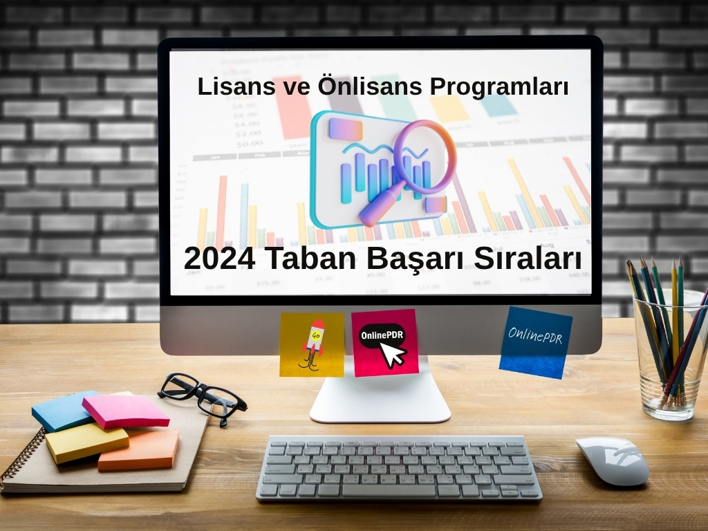

Lisans ve Önlisans Programlarının 2024 Yılı Taban Başarı Sıraları Araştırması
Devlet Üniversitelerinde yer alan lisans ve önlisans programlarına son yerleşen öğrencilerin başarı sıralarını sizler için derledik.
Aşağıda kolayca arama yapacağınız bir yapı oluşturduk.
2024 Taban Başarı Sıraları
Puan türü ve program seçerek taban başarı sıralarını görüntüleyebilirsiniz.
📄 PDF Dokümanları
Lisans Programları
Lisans Programlarının Puan Türlerine göre 2024 taban başarı sıraları araştırması alfabetik sıralı PDF formatında dokümanı
İndirLisans Programları
Lisans Programlarının Puan Türlerine göre 2024 taban başarı sıraları araştırması taban başarı sırası sıralı PDF formatında dokümanı
İndirÖnlisan Programları
Önlisans Programlarının Puan Türlerine göre 2024 taban başarı sıraları araştırması alfabetik sıralı PDF formatında dokümanı
İndirÖnlisan Programları
Önlisans Programlarının 2024 taban başarı sıraları araştırması taban başarı sırası sıralı PDF formatında dokümanı
İndirHangi bölüm hangi başarı sırası ile kapattı görmenizi sağlayacak bir çalışma
Araştırmanın pdf formatları yukarıda yer almaktadır. Faydalı olmasını temenni eder öğrencilerimize başarılar dilerim.
Lisans Programları Araştırmasının Sınırlılıkları
Bu çalışma, Devlet Üniversitelerinin lisans programları arasından; KKTC uyruklu öğrenci kabul eden programlar, UOLP programları, KKTC’de yer alan fakültelerdeki programlar, Açıköğretim ve Uzaktan Öğretim programları ile Türk-Alman Üniversitesi’nin yalnızca belirli liselerden mezun öğrenci kabul eden programları hariç tutularak hazırlanmıştır
Önlisans Programları Aaştırmasının Sınırlılıkları
Bu çalışma, Devlet Üniversitelerinin önlisans programları arasından; KKTC uyruklu öğrenci kabul eden programlar, Açıköğretim ve Uzaktan Öğretim programları ile Engelliler Entegre Yüksekokulu programları hariç tutularak hazırlanmıştır.
Faydalı olması temenni eder, öğrencilerimize başarılar dilerim.